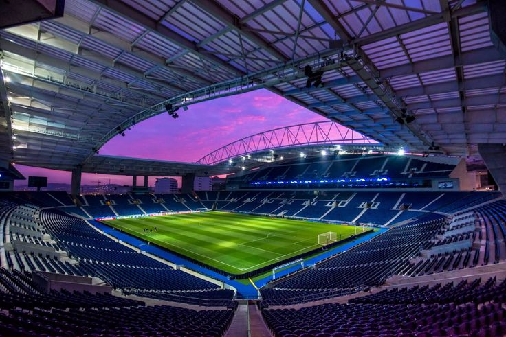
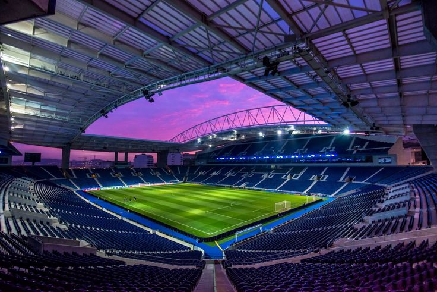

Home
A minha cidade é muito linda!!!
A cidade do Porto, localizada no norte de Portugal, é uma das mais antigas e encantadoras do país. Conhecida pelo seu vinho mundialmente famoso, o Vinho do Porto, a cidade oferece uma mistura perfeita entre tradição e modernidade.
Aceda à Wikipedia